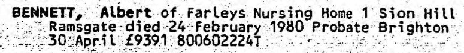
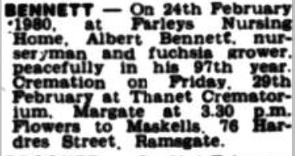
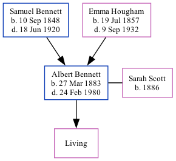

Albert Bennett 1883 - 1980
[ Home ] | [ Calendar ] | [ Surnames Index ] | [ Family History ]A domestic gardener and gardener private and the 2nd of 5 children of Samuel Bennett (a farm servant) and Emma HoughamAlbert Bennett, the first cousin three-times-removed on the mother's side of Nigel Horne, was born in Wingham, Kent, England on Mar 27, 18831,2 and. He married Sarah Scott (with whom he had 1 surviving child) in Thanet, Kent, England around May 19113.
Albert spent all of his life in Kent, England. Throughout his life, he lived in several places around the county: at Station Road, Bekesbourne on Apr 5, 18914; at Netherton, Sibertswold on Mar 31, 19015; at 15 Cannonbury Road, Ramsgate on Apr 2, 19116; and at 3 Cumberland Road, Ramsgate on Jun 19, 19217. Albert In 1921 he was working at Thomas Wotton Brewer at 29 Vale Square, Ramsgate, Kent, England.
He died on Feb 24, 1980 at Farleys Nursing Home, 1 Sion Hill, Ramsgate, Kent2.
Parents
- Samuel was born on Sep 10, 1848
- Emma was born on Jul 19, 1857
Citations
- England & Wales births 1837-2006 - Findmypast
- England & Wales deaths 1837-2007 - Findmypast
- England & Wales Marriages 1837-2005 - Findmypast
- 1891 England, Wales & Scotland Census - Findmypast (was age 8 and the son of the head of the household)
- 1901 England, Wales & Scotland Census - Findmypast (was age 18 and the son of the head of the household)
- 1911 Census for England & Wales - Findmypast (was age 28 and a boarder in the household)
- 1921 Census Of England & Wales - Findmypast (was age 38 and the head of the household)
Media
Albert Bennett - Probate Notice

East Kent Times and Mail - 29 Feb 1980

England & Wales deaths 1837-2007 - BMD/D/1980/1/AZ/000089/016
England & Wales births 1837-2006 - BMD/B/1883/2/AZ/000046/003
1911 Census for England & Wales - GBC/1911/RG14/04513/0115/7
1921 Census Of England & Wales - GBC/1921/RG15/04465/0743/01
England & Wales Marriages 1837-2005 - BMD/M/1911/2/AZ/000071/147
Family Tree
Generated by ged2site. Last updated on Nov 13, 2024